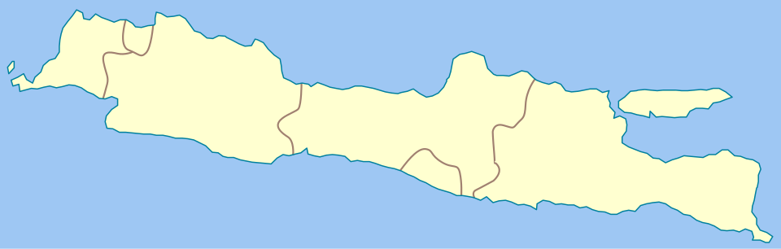

Nada Vulkanik
Beranda
Pengetahuan Kebencanaan
Tentang
Status Terkini Gunung Merapi, Aktivitas, & Potensi Bencana
Selengkapnya
Status Gunung Berapi Pulau Jawa

Merapi – Level III (Siaga)
Semeru – Level II (Waspada)
Bromo – Level I (Normal)
Slamet – Level II (Waspada)
Tangkuban Perahu – Level I (Normal)
Ijen – Level II (Waspada)